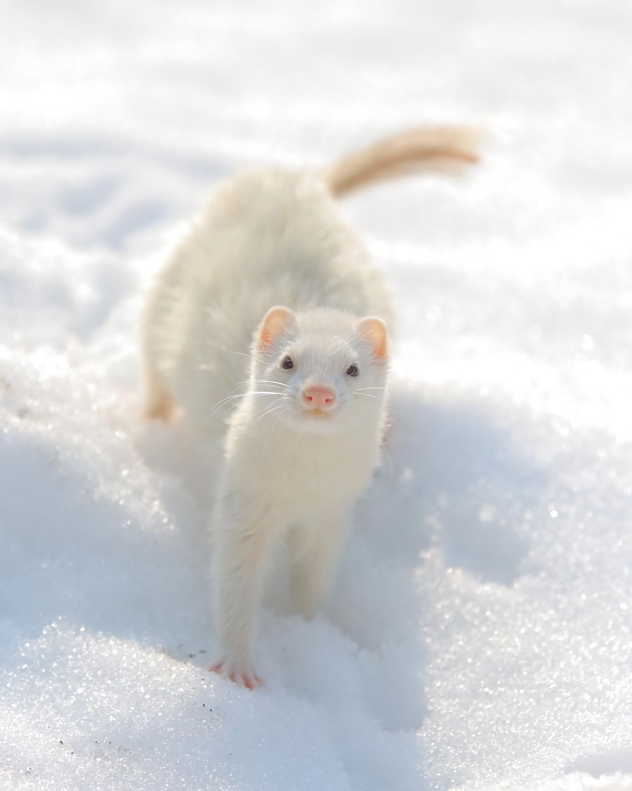

Ferret
What are ferrets ?
A ferret is a mammal weighing 1.5 - 2.5 pounds for females, and 2 - 4.5 pounds for the males. Some males, also known as hobs, have been known to weigh slightly more than 5 pounds, though this is rare. Females are known as Jills. Their scientific name is Mustela Purtorius Furo, and are a carnivorous animal, meaning they eat meat. Domestic ferrets have glands throughout their bodies and a main scent gland under their tail. When frightened, they discharge a strong smelling secretion to warn off the attackers. This action is known as 'poofing' and the odor dissipates quickly. Ferrets are usually descent-ed and spayed or neutered at a young age, before they are fully weaned and sold to pet shops.
Ferrets are members of the family Mustelidae, which includes weasels, mink, otters, and skunks. Their closest relative is the European Polecat, and is believed to be a direct ancestor of the domestic ferret. Domestic ferrets should not be confused with the endangered Black Footed Ferret. While the appearance is similar, the two animals are actually only distant cousins.

Ferrets are domestic animals and should not be classified as wild. They have been domesticated since 4 b.c., if not earlier. As such, ferrets have lost all of their wild instincts and ability to survive in the wild. In fact, if a ferret escapes the safety of your home, they most likely will not survive more than 3-5 days. They are most likely to die of dehydration, starvation, or being killed by a predator. This is due to their extremely trusting nature, and lack of fear. Never let your ferret 'free'. If you cannot keep your ferret please use the services provided by this or other shelters.
Ferrets are not exotic pets. While many pet stores classify ferrets as exotics, the definition of exotics contradicts this. The definition says that an exotic pet is also one that can be found in the wild. Because their are no wild colonies of ferrets, to claim that a ferret is exotic, would be false. Ferrets are companion animals, just as a dog or a cat. In fact, ferrets are even more domesticated than the cat or dog. Cats and dogs can survive without the intervention of humans. A ferret cannot.
Ferrets have been domesticated for centuries, as far back as ancient Egypt. There are images of ferrets carved into the stone walls of tombs. Kept by royalty in England, they were used to help keep the rodent population of the castle under control. Queen Elizabeth I had an albino ferret as a pet as well. They made their way to the America's working on ships as rodent control. Up until the invention of kitty litter, they were the preferred choice of rodent population managers for many. Ferrets are still used to this day to hunt rabbits and rats, and carry wire through tunnels and pipes.